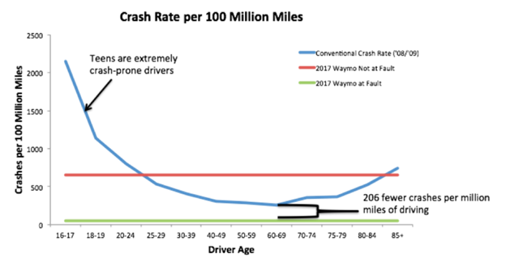

Statistical Knowledge on Self-Driving Cars
Risk Factors
One of the most significant concerns that people have with autonomous vehicles is safety. People want to make sure that the artificial intelligence that is driving them around isn’t going to get into an accident, but a large body of research shows that humans are usually the main cause of car crashes. Driver error was a contributing factor in 92.9% of all car crashes since 1979, compared to 34.99% for roadway factors and 9.1% for vehicle factors 9us.sagepub.com/en-us/nam/reviews-of-human-factors-and-ergonomics/book248507 and in 2016 there were 37,461 motor vehicle-related deaths, with that number climbing higher and higher every year. 15crashstats.nhtsa.dot.gov/Api/Public/ViewPublication/812013 Of course, there’s no proof that eliminating human drivers would completely eliminate driver error, but if one looks at the more specific statistics, it becomes apparent that a sizeable portion of error could be mitigated by self-driving cars. Four out of the top five contributing factors to car crashes were related to driver distraction or recklessness – improper lookout, excessive speed, inattention, and internal distraction – with almost half of all wrecks caused by one of these four factors. A self-driving car can’t get distracted like a human driver can and is programmed always to follow rules of the road like the speed limit so that these factors wouldn’t be issues for them. Although it wouldn’t eliminate the chance of a car crash – replacing human drivers would help to limit the risk factors that cause many car wrecks.
Safety
In general, self-driven cars are safer than human drivers, although there is some variation between different self-driving car programs. Far and above the top performer, Google’s Waymo program averages ten times lower at-fault crashes per 100 million miles than even the safest demographic of human drivers. 16www.huffingtonpost.com/entry/how-safe-are-self-driving-cars_us_5908ba48e4b03b105b44bc6b Taking into account all driverless car programs put together there were about 132 million miles driven since from 2009 to 2016 with 14 accidents reported, which comes out to 10.6 accidents per 100 million miles. 24www.rand.org/pubs/research_reports/RR1478.html. On the other hand, in 2015 alone there were 6,296,000 police-reported traffic crashes, with 3.148 trillion miles driven, coming out to 200.5 crashes per 100 million miles – almost 20 times more than the self-driving rate. 23crashstats.nhtsa.dot.gov/Api/Public/Publication/812376 Although the statistics look promising, it’s important to remember that with the relatively small sample of autonomous vehicle data available drawing conclusions could be dangerous. Another possible cause for concern is the disproportionately high fatality rate in crashes involving self-driving cars. Compared to the national average of around one fatality for every 20 crashes, so far self-driving cars have seen one fatality in 7 accidents. Although most likely due to the small sample size of data on self-driving cars, if these fatality rates continue to be as high as they are it could be problematic for the industry and its customers.
An interesting phenomenon emerges when looking at at-fault rates versus not-at-fault rates for self-driving car accidents. As shown in the above graph, although at-fault rates are many times lower than average for Waymo, not-at-fault rates are higher than many demographics of human drivers. This may be because Waymo cars always follow traffic laws exactly, and this can lead to unexpected behavior when human drivers are not used to it. For example, stopping at every crosswalk, while technically required in some places, is not something that most human drivers would do unless there were pedestrians waiting to cross and could result in a higher number of cases where a Waymo car is rear-ended when stopping because a human driver did not expect it to do that. 16www.huffingtonpost.com/entry/how-safe-are-self-driving-cars_us_5908ba48e4b03b105b44bc6b
Public Opinion
Despite the reality of how safe autonomous vehicles are, a large amount of the public remains very wary of their introduction and adoption into the mainstream. When surveyed, most people expressed concerns about the safety of self-driving cars.
According to one survey of Australian, English, and American car owners, roughly half of car owners generally had favorable opinions of Autonomous cars, but almost 90% had concerns about the technology as well, with most citing lack of control and liability issues as the most concerning aspects. 7deepblue.lib.umich.edu/bitstream/handle/2027.42/108384/103024.pdf Additionally, many people said that they would not be willing to pay extra for self-driving functionality in their car. 7deepblue.lib.umich.edu/bitstream/handle/2027.42/108384/103024.pdf &nbps; In another survey, around 75% of respondents said that they did not trust autonomous vehicles. 16www.huffingtonpost.com/entry/how-safe-are-self-driving-cars_us_5908ba48e4b03b105b44bc6b
The reason for this widespread unease about self-driving cars could be related to their novelty. More than 3,000 people die in car crashes every day, so although it’s tragic, it’s not anything new when it happens, whereas the first death that a self-driving car was involved in was hugely publicized and a big deal was made of it, going so far as to cause possible legislative backlash in states like Minnesota and New York. 17www.wired.com/story/tesla-autopilot-self-driving-crash-california/ Another potential cause for this lack of trust in autonomous vehicles might be the loss of control associated with using a self-driving car. Most people are used to being in control while driving about, and this is confirmed by the previously mentioned survey, in which the number one reason cited for lack of trust was the loss of control. Like how the effect of novelty will eventually wear off, this fear will most likely fade as self-driving cars become more mainstream since there is a similar loss of control every time one gets into a taxi, or on an airplane.